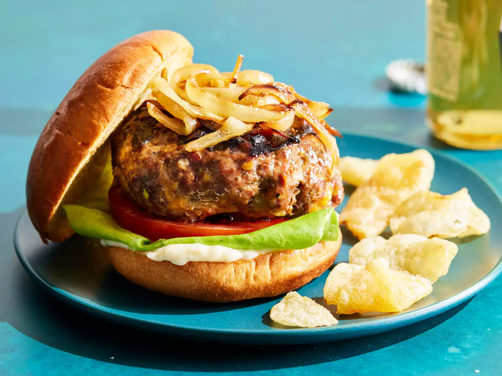

Hamburger Recipe

Description:
The all-american hamburger, perfect for a cook out on a beautiful summer's day.
Ingredients:
- 1 1/2 pounds of lean ground beef
- 1/2 onion
- 1/2 cup of shredded Colby Jack cheese
- 1 large egg
- 1 ounce of dry onion soup mix
- 1 clove of garlic
- 1 tablespoon of garlic powder
- 1 teaspoon of soy sauce
- 1 teasponn of Worcestershire sauce
- 1 teaspoon of dried parsley
- 1 teaspoon of dried basil
- 1 teaspoon of dried oregano
- 1/2 teaspoon of crushed dried rosemary
- salt and pepper to taste
Steps:
- Gather all ingredients. Preheat an outdoor grill for high heat and slightly oil the grate.
- Meanwhile, combine ground beef, onion, cheese, egg, onion soup mix, minced garlic, garlic powder, soy sauce, Worcestershire sauce, parsley, basil, oregano, rosemary, salt, and pepper in a large bowl.
- Use your hands to form the mixture into 4 patties
- Cook patties on the preheated grill until no longer pink in the center and the juices run clear, about 4 to 5 minutes per side.
- An instant-read thermometer inserted into the center should read at least 165 degrees F.
Home